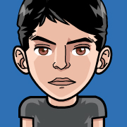

Darwin Vasquez
Estudiante de Ingeniera de Sistemas, apasionado por la Investigacion y la Ciencia. Programmer. Lignuxero y Defensor del Software, Hardware y Cultura Libre. Supporter on The Venus Project.
Ivan Diaz
Estudiante de Ingenieria de Sistemas, proactivo, innovador, autodidacta, emprendedor, atraido por la seguridad informatica, la programacion, las nuevas tacnologias y la ciencia como herramienta de vida, programador en HTML5, CSS3, PHP, JAVA, C, C++
Daniel Molina
//Ingeniero De Sistemas //Amante De Las Telecomunicaciones //Pensador
//Analista //DataBase Designer //Gamer And Owner Of XBOX360 //Lover Of Halo //Backend Programmer //Runner De Medio Tiempo // Amante Y Conservacionista De La Naturaleza!
Juan Arrieta
Programador | Game Maker | Escritor | Soñador | Adicto al #Toddy | Alegre | Espontaneo | Divertido | ΔOX☐ User | Microsoft Fanboy | Metal Gear Solid Loved | Gamer | Anime Follower | Ateo | SQL Servers | Help Desk | Youtuber | Just For Fun.

Franklin Marquez
Estudiante de Ingenieria de Sistemas, Aficionado a los Video Juegos Multiplataforma, la Música de Rock, el Anime, la Ciencia y la Tecnología; Programador, especializado en el desarrollo de páginas web, aplicaciones y juegos en Unity 3D, edición en Photoshop y diseño en pixel art. No me guio por los modismos o convencionalismos sociales
Luis Casanova
Jedi | Geek | Curious | Sarcástico | Ironico | AIESECer | Front/Backend Developer | UX/UI Designer | Gamer | Java | C++ | Networking & Telecom | Digital Marketing | Systems Design | Crítico | Zombie come libros de medio tiempo | Science & Tech |
Oscar Lopez
Buscador del Equilibrio entre Mente y Cuerpo, Shotting Games, Fitness, xD, Vegetariano, Analista, Smile always, Algorithm Developer, me gusta el anime, programar, Muertos Vientes, Preppers, mitologia, critico, debatir con religiosos, calcular probabilidades, siempre ser mejor de lo que eres, enterpresing, entender distintas cultura, Kanjis, relax.
Erwin
Curabitur sit amet nulla. Nam in massa. Sed vel tellus. Curabitur sem urna, consequat vel, suscipit in, mattis placerat, nulla. Sed ac leo.